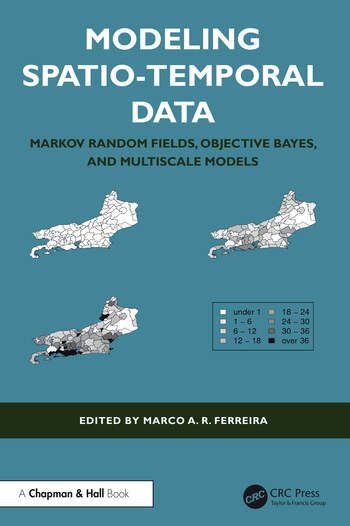
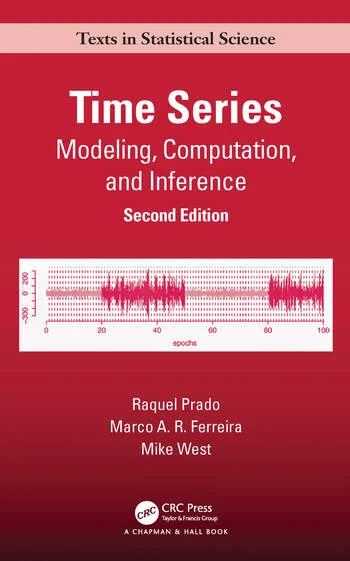
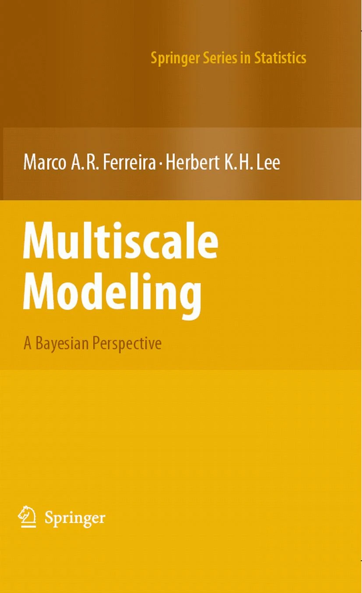

Virginia Tech
Department of Statistics
Home
Books
Papers
Software
Students
Presentations
Teaching
CV
Contact
Marco A. R. Ferreira
Professor of Statistics
 M.A.R. Ferreira (Editor) (2024),
Modeling Spatio-Temporal Data: Markov Random Fields, Objective Bayes, and Multiscale Models
, Boca Raton: Chapman Hall/CRC.
 R. Prado, M.A.R. Ferreira, M. West (2021),
Time Series: Modeling, Computation and Inference, Second Edition,
Boca Raton: Chapman & Hall / CRC.
 Marco A.R. Ferreira and Herbert K.H. Lee (2007),
Multiscale Modeling: A Bayesian Perspective
, Springer Series in Statistics, New York: Springer.